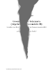

Das VorlesungsMitschriebWiki
Home
Guestbook
Sitemap
Wiki-History
About
TOC for this page
Edit this page
New Document
Back to top
Latex File: Sicherheit
Sicherheit
✎ Edit
PDF

Prof. Dr. Müller-Quade
|
Sommersemester 2012
More
Inhaltsverzeichnis / kapitelweises bearbeiten
Preamble
✎ Edit
Über dieses Skriptum
✎ Edit
Einleitung
✎ Edit
Symmetrische Verschlüsselung
✎ Edit
Hashfunktionen
✎ Edit
Schlüsselaustausch
✎ Edit
Public-Key-Kryptographie
✎ Edit
Digitale Signaturen
✎ Edit
Key Management
✎ Edit
Netzwerksicherheit
✎ Edit
Zugriffskontrolle
✎ Edit
Zero Knowledge
✎ Edit
Authentifikation
✎ Edit
Seitenkanalangriffe
✎ Edit
Implementierungsfehler
✎ Edit
Sicherheitsbewertung/Zertifizierung
✎ Edit
Data Base Privacy
✎ Edit
Secure Function Evaluation
✎ Edit
L
a
T
e
X
:
Source
|
Output
|
Logfile